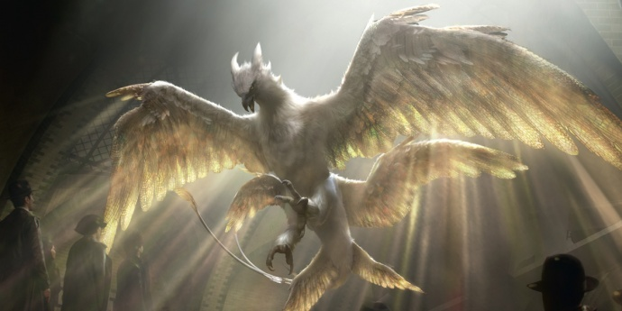

뒤로 가기

불사조의 근연종이라고 한다. 아메리카 원주민 전설의 그 천둥새다.
폭풍을 일으키는 본성이 있고 날씨를 조정하는 능력이 있다.
전반적으로 독수리를 닮은 외형에, 광택이 나는 금빛을 띄는 몸체와 엄청난 체격, 큰 한 쌍의 날개와 두 쌍의 보조 날개, 공자새를 닮은 긴 꼬리를 지녔으며 수리와 붉은꼬리말똥가리의 울음소리를 합친듯한 울음소리를 낸다.
스우핑 이블의 독만 보아도 자기가 뭘 해야 할지 알고, 위험도 감지하는 걸 보면 머리도 좋고 눈치도 빠른 듯. 뉴트가 "네가 탈출했으면 재앙이 일어났을 거야." 라고 한 걸 보면 생긴것 답게 매우 강력한 것으로 보인다.